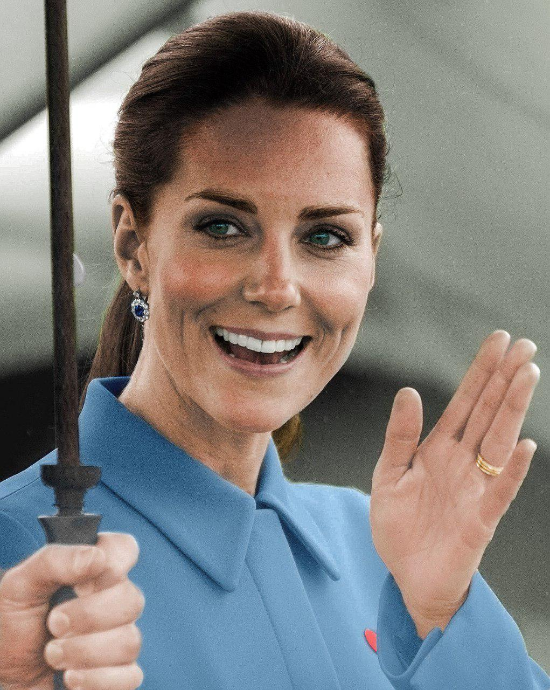

Кэ́трин, герцоги́ня Ке́мбриджская (в девичестве Кэ́трин Эли́забет Миддлтон; англ. Catherine, Duchess of Cambridge, née Catherine Elizabeth Middleton; род. 9 января 1982, Рединг) — супруга герцога Кембриджского Уильяма. В Шотландии — графиня Стратерн (англ. Countess of Strathearn).
